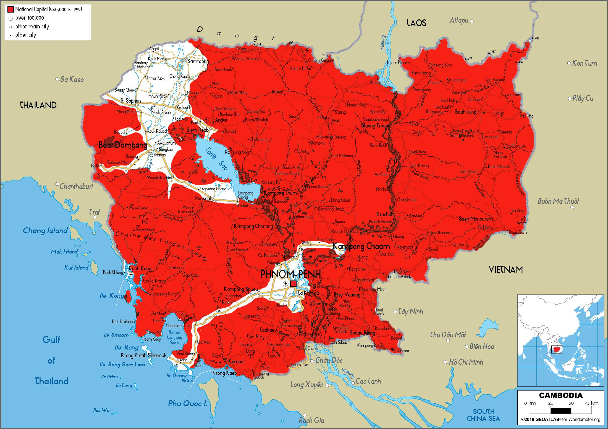
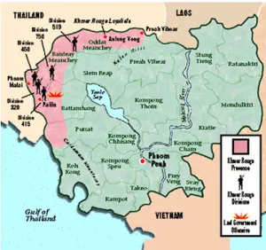

What happened Pol Pot was in power?
The Khmer Rouge = brute force of the Communist Party of Kampuchea beginning in the 1960s. They were initially not supported by citizens.
Prince Norodom Sihanouk introduction of economic neutrality, rejection of international aid, and nationalization of banks and insurance leads to deteriotation of the economy.
Land-owning farmers were otherwise self-sufficient and
In search of a communist replacement, the Khmer Rouge launched a civil war against Prince Sihanouk
The prince was taken out of power by a coup, then collaborated with the Khmer Rouge which led to them gaining more popularity with Cambodian people. He did so in order to overthrow Lon Nol, who was the righ-wing/pro U.S. leader that took over after his deposition.
North Vietnam (Marxist-Leninist) sent their forces in to aid the Khmer Rouge and help overthrow Lon Nol. The U.S. sent some military power to Cambodia to fend off North Vietnam and Prince Sihanouk.
Pol Pot, a senior party member of the CPK (Communist Party of Kampuchea) at the time, was going on tours of Cambodia's "liberated zones" to oversee the enforcement of the CPK's new way of life. This included no gambling, regulated alcohol sales, and emulating the life of the average Cambodian peasant. Citizens who were wealthy/middle class were forced to abandon their possesions and wealth in favour of a poor and isolated farmer's lifestyle.
Life under the Khmer Rouge in these liberated zones was full of suspicion and secrecy. People were encouraged to rat on eachother (thus ending in one party being terminated for not following rules).
Violence between Khmer Rouge and North Vietnamese forces became increasingly frequent at this time.
Pol Pot orders all controlled villages (highlighted below in red) to collectivize, and all villagers are barred from having their own farms. General villager sentiment was against collectivization, and people slaughtered their own livestock in protest.

over 60 000 Cambodians fled the country, the Khmer Rouge began consripting the people that remained, and many Khmer Rouge who had been in North Vietnam were interned and executed.
Lou Nol's government surrenders Phnom Penh, and the CPK promptly takes over the capital. Around 750 government and military officials were murdered.
After the vast majority of Phnom Penh is either dead or in a labour camp somewhere, Pol Pot announces agriculture to be of top priority, and states that each person should meet a quota of 3 tons of unmilled rice per hectare.
What you see in documentaries like "The Killing fields" fully kicks into gear now. People are no longer allowed to use pronouns like "I", and a ten-day work week similar to what was used after the French Revolution was applied. All media is CPK propaganda, and a three-tier hirearchy determined what rights people had. People working in the agricultural co-operatives near Western Cambodia often starved to death due to overpopulation, which was planned for by Pol Pot.
Pol Pot often purged the government of people who seemed to be sympathetic to the Vietnamese. Worship of Angkar, a pseudonym for the CPK was forced onto Cambodian citizens.
Pol Pot becomes the Prime Minister of Democratic Kampuchea. Fake parliamentary meetings were held at the silver pagoda (Pol Pot's place of residence).
Mao Zedong of China pledged around what would be 1 billion CAD in military aid to Cambodia, and sent engineers and technicians to help ongoing construction projects.
Suddenly, Cambodia was preparing for war against Vietnam.
Kim Il Sung of North Korea speaks in favour of the Khmer Rouge against Vietnam. Later, in December 1977, Vietnam invaded Cambodia and brought together Khmer Rouge/Cambodian defectors to fight against Pol Pot.
**At this time, the United Nations recognized the Khmer Rouge as the governing body of Cambodia, not the Vietnamese/Cambodian citizen coalition. China still supported the Khmer Rouge politically, and through military supplies.
After an arduous battle with Vietnam, the Communist Party of Kampuchea is dissolved.
End of the Cold war marks U.S. troops officially withdrawing from Cambodia and Vietnam, leading the Coalition Government of Democratic Kampuchea (which was formed in response to the dissolve of the CPK) to no longer be recognized as the government of Cambodia in the UN General Assembly.
Pol Pot's health begins to fail severely. A Khmer Rouge senior chief, Ta Mok, worries that he will be assassinated and rallies troops against Pol Pot. Pol Pot is placed under house arrest and soon after dies of a heart attack.
Ta Mok is captured by the Cambodian Army, and the Khmer Rouge is dissolved.
Former Khmer Rouge soldiers and elites are still present in the Cambodian government. Their current prime minister, Hun Sen, is a former Khmer Rouge soldier. Voting